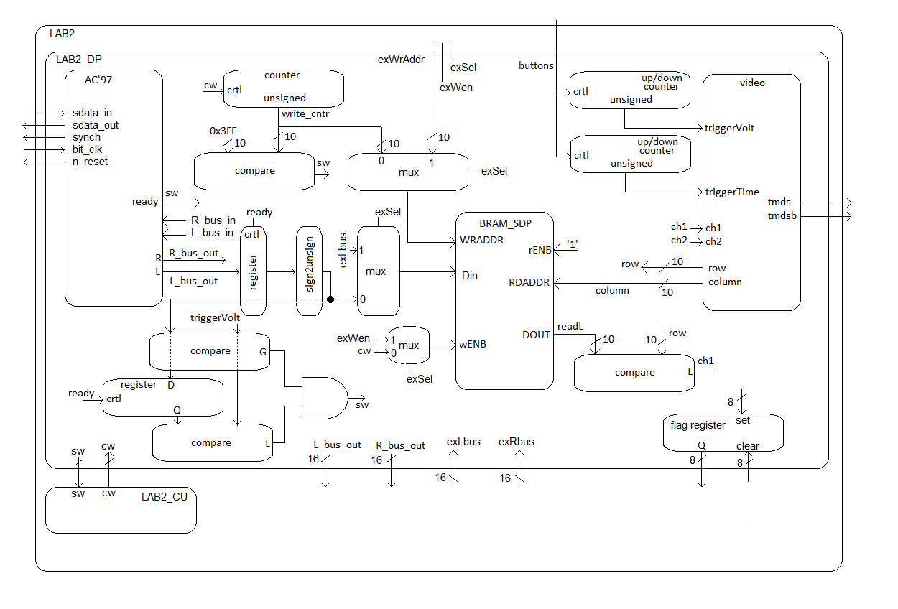

Lab 2 - Data Acquisition, Storage and Display
Lab Overview
In this lab we will integrate the video display controller developed
in Lab 1 with the audio codec on the ATLYS board to build a basic
2-channel oscilloscope. When complete, your lab should generate
output similar to the following picture.
Architecture
Just like with the design of Lab 1, Lab 2 is broken down into
a bunch of separate modules shown in the block diagram below.
Some of the components in the block diagram will be given to
you and some you have already created. Its important to note
that some of the components and signals associated with this
lab will not strictly be needed, but have been included in
order that this lab may smoothly integrate with Lab 3 and 4
(keep your fingers crossed).

The main flow of data through this systems proceeds from left
to right. You will provide audio input to the circuit through the
blue line-in jack. This audio jack is connected to a National
Semiconductor LM4550 AC'97 multi-channel audio codec. The LM4450 samples
the audio input at 48kHz into separate 18-bit 2's complement left
and right channels. The LM4550 then transfers this data to our Spartan6
chip over a serial bus through the 5 signals on the left side of the Lab2
component. The serial protocol is quite complex - you will be given the
AC97_wrapper component to deal with this complexity. Your circuit will
be notified of new converted data when the ready signal goes high for
a single clock cycle. Your circuit will then do two things with the
incoming L_bus_out and R_bus_out. First it will loop both these back
to the output so that you can verify (by listening on the HP_OUT jack)
that the AC97 hardware and firmware are operating correctly. This is
accomplished with the following VHDL code.
process (clk)
begin
if (rising_edge(clk)) then
if reset = '0' then
L_bus_in <= (others => '0');
R_bus_in <= (others => '0');
elsif(ready = '1') then
L_bus_in <= L_bus_out;
R_bus_in <= R_bus_out;
end if;
end if;
end process;
The second thing you circuit will need to do with the L_bus_out signal is
to send it, in an unsigned format, to be stored in the block ram (BRAM).
Converting the 2's complement values into unsigned is technically easy,
but may be a little difficult to wrap you head around - lets try. The
smallest 2's complement number in 18-bits
| Input Value | Ouput Value
|
| 2's complement | 2's value | unsigned | unsigned value
|
| 100...000 | -131072 | 000...000 | 0
|
| 111...111 | -1 | 011...111 | 131071
|
| 000...000 | 0 | 100...000 | 131072
|
| 000...001 | 1 | 100...001 | 131073
|
| 011...111 | 131071 | 111...111 | 262143
|
The values in the left 2 columns represent the input value, in this case
L_bus_out. The right 2 columns represent the output of the box labeled
"sign2unsign" in the block diagram. What we are looking to do is to shift
the unsigned values up so that they all fall into a positive range. You will
need to puzzle over the transformation that accomplishment this - its really simple.
The mux circuitry attached to the write address of the RAM will be used in Lab3,
allowing the microBlaze processor to take over write duties for the RAM.
Independent of the write circuitry, the read circuit pulls data from the RAM,
and draws the waveform. Unlike for the write circuitry, the read circuitry
needs no FSM control.
Since its a very complex piece of circuitry, the entity for the datapath is
given below.
Datapath
entity lab2_datapath is
Port(
clk : in STD_LOGIC;
reset : in STD_LOGIC;
SDATA_IN : in STD_LOGIC;
BIT_CLK : in STD_LOGIC;
SYNC : out STD_LOGIC;
SDATA_OUT : out STD_LOGIC;
AC97_n_RESET : out STD_LOGIC;
tmds : out STD_LOGIC_VECTOR (3 downto 0);
tmdsb : out STD_LOGIC_VECTOR (3 downto 0);
sw: out std_logic_vector(2 downto 0);
cw: in std_logic_vector (2 downto 0);
btn: in STD_LOGIC_VECTOR(4 downto 0);
exWrAddr: in std_logic_vector(9 downto 0);
exWen, exSel: in std_logic;
Lbus_out, Rbus_out: out std_logic_vector(15 downto 0);
exLbus, exRbus: in std_logic_vector(15 downto 0);
flagQ: out std_logic_vector(7 downto 0);
flagClear: in std_logic_vector(7 downto 0));
end lab2_datapath;
Flag Register
In Lab3 we will be integrating most of the components from this lab with the
MicroBlaze processor. In order to make this happen smoothly, we will need a
way to transfer information between the two systems a technique similar to a
2-line handshake. To make this possible, you will need to build a component
called a flag register.
| reset | clk | set | clear | Q+
|
| 0 | X | X | X | 0
|
| 1 | 0,1,falling | X | X | Q
|
| 1 | rising | 0 | 0 | Q
|
| 1 | rising | 1 | 0 | 1
|
| 1 | rising | 0 | 1 | 0
|
| 1 | rising | 1 | 1 | X
|
This component will interface our lab2 component with a microBlaze
as follows. The lab2 component will produce some piece, put it on a data
line to microBlaze and then set one of the bits of the flag register. The
microBlaze will at some point get around to looking at this bit. When it
sees that its set, it will grab the data and then clear that flag bit.
Yes, these are supposed to be just like the flag bits in the MSP 430.
Build the device to have the following entity declaration:
entity flagRegister is
Generic (N: integer := 8);
Port( clk: in STD_LOGIC;
reset : in STD_LOGIC;
set, clear: in std_logic_vector(N-1 downto 0);
Q: out std_logic_vector(N-1 downto 0));
end flagRegister
The set lines should be connected to the following signals. For the
time being you can leave the Q outputs to open.
- ready
- v_synch'
- write_cnt compare output
VHDL Code
Generating Audio Waveforms
I used the
Keuwl Dual Channel
Function Generator app on my Android phone to produce
audio waveforms into my circuit. The learning curve is a bit steep
with this function generator, but it has a ton of capability which
you may find useful in your lab.
Required Functionality
Get a single channel of the oscilliscpe to display with
reliable triggering that holds the waveform at a single
point on the left edge of the display. A 220Hz waveform
should display something similar to that shown in the screen
shot at the top of this page.
- Use a package file to contain all your component declarations.
- Use seperate datapath and control unit.
- Your datapath must use processes which are similar
to our basic building block (counter, register, mux, etc.).
I do not want to see one massive process that attempts
to do all the work in the datapath.
- Testbench for the flagRegister.
- Testbench for the control unit.
- Testbench for the datapath unit showing data (different value than
what is given in the testbench) coming out of the AC'97 audio codec and being
converted from signed to unsigned and then to std_logic_vector to go into your BRAM.
Include calculations to back up what the waveform shows.
- For Bonus Points: Testbench for the datapath unit showing that same data coming out of the BRAM.
This will require you to set your control words on the testbench. Additionally, you will have to drive the pixel_clock on the Video Module.
B-level functionality
Meet all the requirements of required functionality.
Add a second channel (in green). Integrate the button debouncing
stratigy in HW #7 to debounce the buttons controlling the trigger
time and trigger volage. Move the cursors on the screen.
A-level functionality
Meet all the requirements of B-level functionality.
Use the trigger voltage marker to establish the actual trigger
voltage used to capture the waveform. As the trigger is moved
up and down you should see the point at which the waveform
intersects the left side of the screen change.
Turn In
All your work in this lab is to be submitted using Bitbucket. The main
part of the lab is your README, documenting your design.
Your README must include the following:
- Introduction - Provide a brief overview of the
problem.
- Implementation - Provide block-diagram of your
solution using the signal names in your code. The
block diagram given above is somewhat incomplete, make sure to include
corrections to this diagram. For each module that you built, explain
its overall purpose, inputs, outputs, and behavior. Include all your
vhdl files (code and testbench), wcfg file, and bit files. Put these
in a folder called "code".
- Test/Debug - Briefly describe the methods used
to verify system functionality.
List the major problems you encountered and how you fixed them.
This should cover all the problems you encountered in the lab and
how you fixed them. Break each problem and solution into separate
paragraphs.
- Capability - Well you have built a oscilloscope, what
are its capabilities?
- The horizontal axis represents time. There are 10 major
divisions on the display; how long does each major division represent?
- Each major time division is split into 4 minor division, how long
does each minor division represent?
- Generate a sine wave that can be fully captured on your display
(like the yellow channel in the image at the top of this web page).
record its height in major and minor vertical divisions. Measure
this same audio output using the break out audio cable. Record the
peak-to-peak voltage. Compute the number of volts in each major and
minor vertical division.
- Starting at address 0, how long does it take to fill the entire
memory with audio samples (coming in at 48kHz)?
- How long does it take to completely draw the display once?
- The question is likely relevant to Lab 3 - how long is the
vsynch signal held low?
- Conclusion - Explain what your learned from this
lab and what changes you would recommend in future years to this lab
or the lectures leading up to this lab.
Grading
| Item |
Grade |
Points |
Out of |
Date |
Due |
| Required Functionality |
On-Time ------------------------------------------------------------------ Late: 1Day ---- 2Days ---- 3Days ---- 4+Days |
|
40 |
|
COB L16 |
| B Functionality |
On-Time ------------------------------------------------------------------ Late: 1Day ---- 2Days ---- 3Days ---- 4+Days |
|
10 |
|
COB L16 |
| A Functionality |
On-Time ------------------------------------------------------------------ Late: 1Day ---- 2Days ---- 3Days ---- 4+Days |
|
10 |
|
COB L16 |
| Use of Git / Bitbucket |
On-Time: 0 ---- Check Minus ---- Check ---- Check Plus ---- Late: 1Day ---- 2Days ---- 3Days ---- 4+Days |
|
5 |
|
COB L17 |
| Code Style |
On-Time: 0 ---- Check Minus ---- Check ---- Check Plus ---- Late: 1Day ---- 2Days ---- 3Days ---- 4+Days |
|
10 |
|
COB L17 |
| README |
On-Time: 0 ---- Check Minus ---- Check ---- Check Plus ---- Late: 1Day ---- 2Days ---- 3Days ---- 4+Days |
|
25 |
|
COB L17 |
| Total |
|
|
100 |
|
|